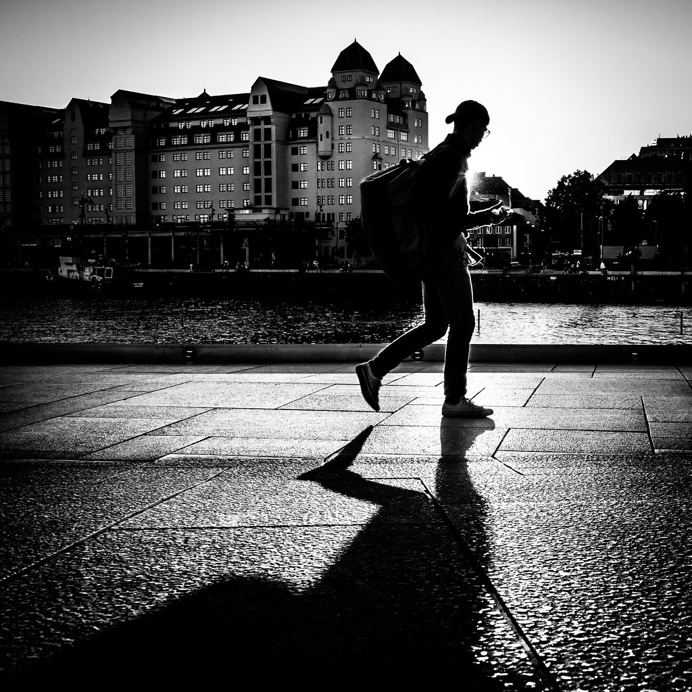
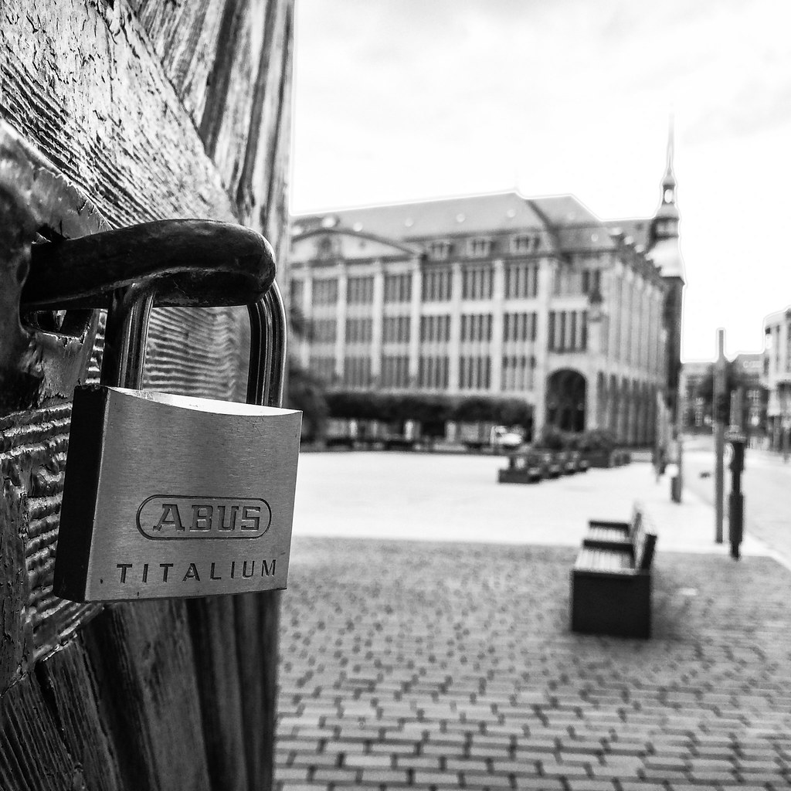
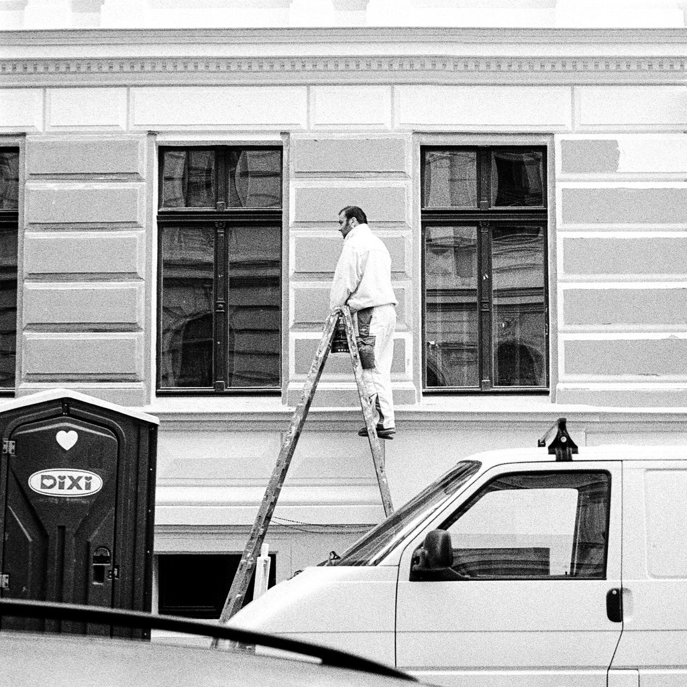
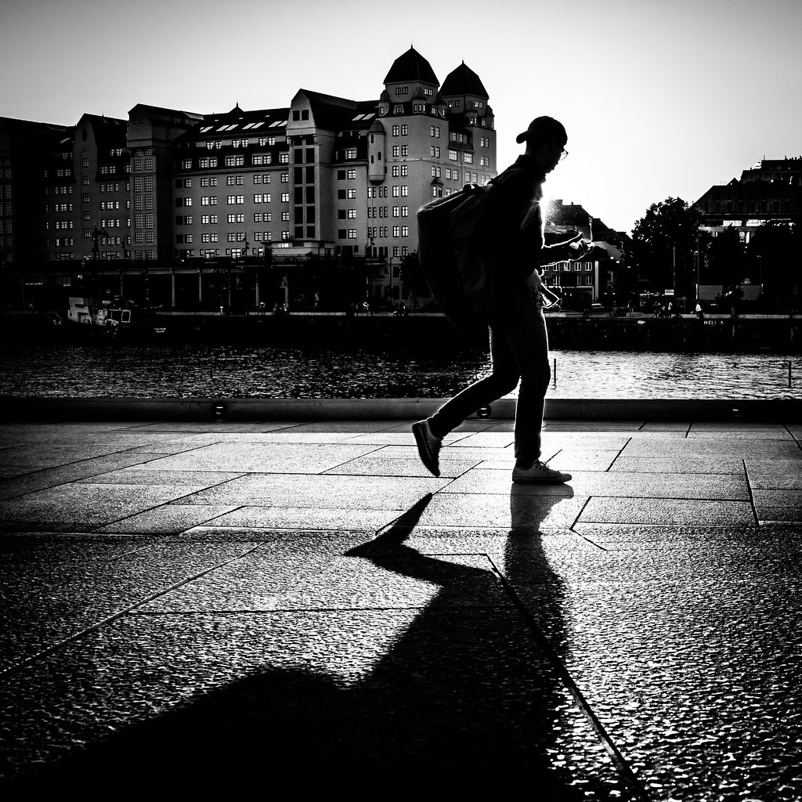
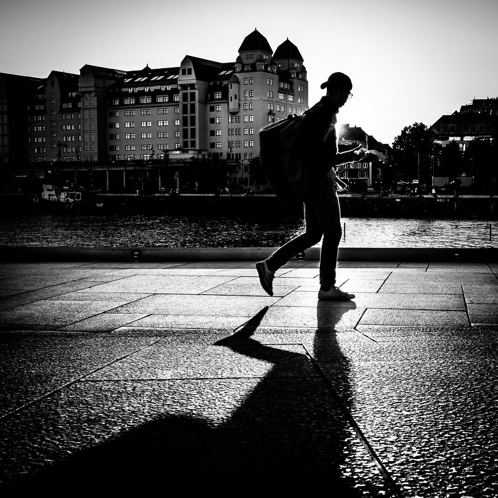
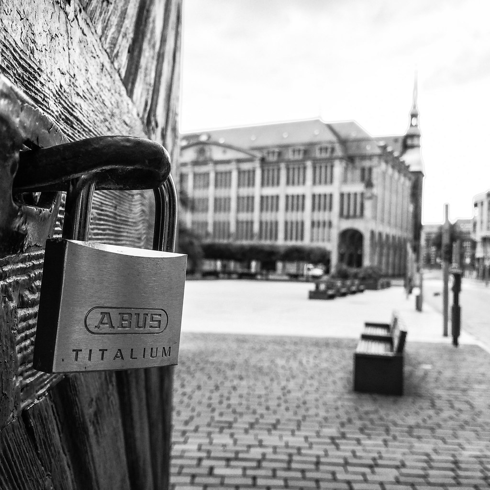
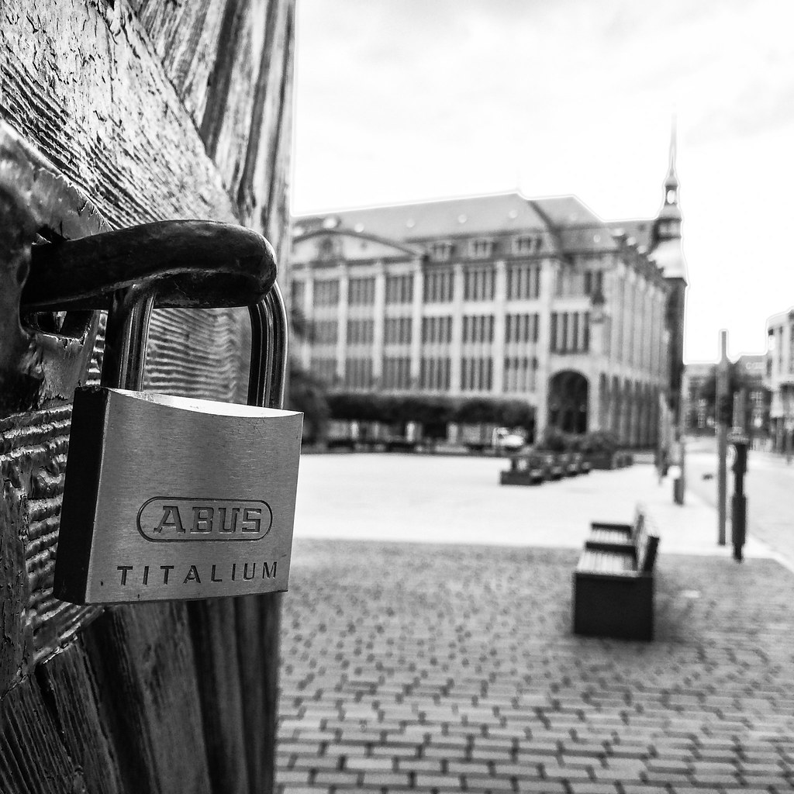
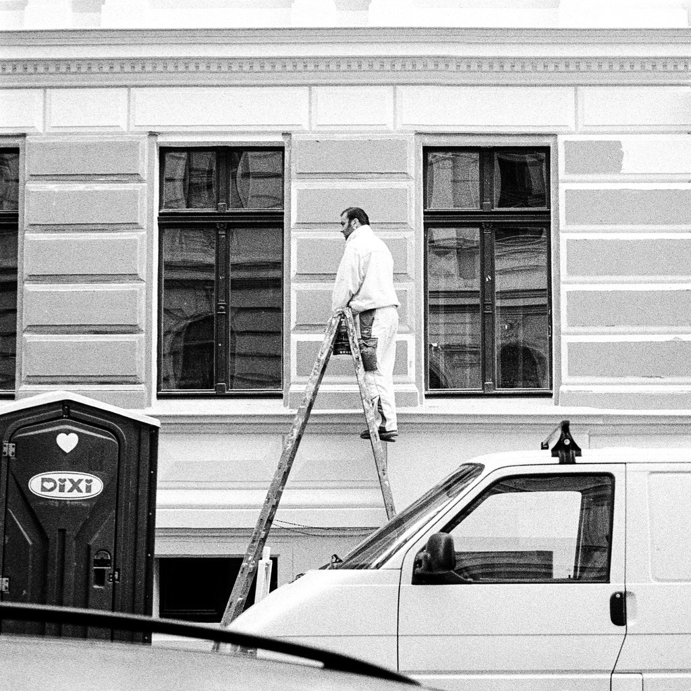
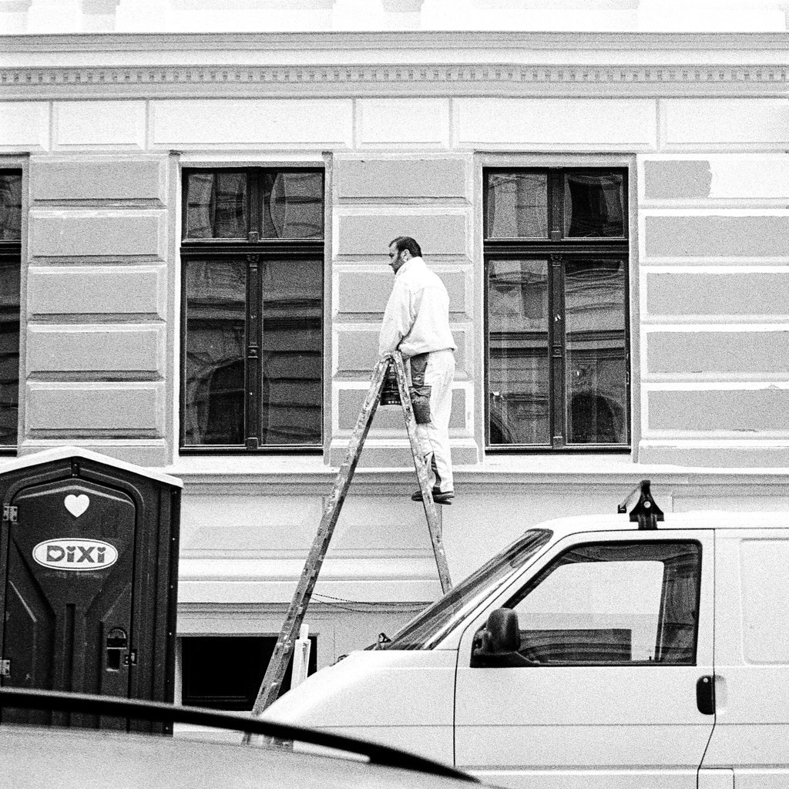

{{ galleryTitle }}



All Photos Licensed Under Creative Commons 2.0
https://creativecommons.org/licenses/by/2.0/legalcode

 



 

 
https://creativecommons.org/licenses/by/2.0/legalcode

https://creativecommons.org/licenses/by/2.0/legalcode